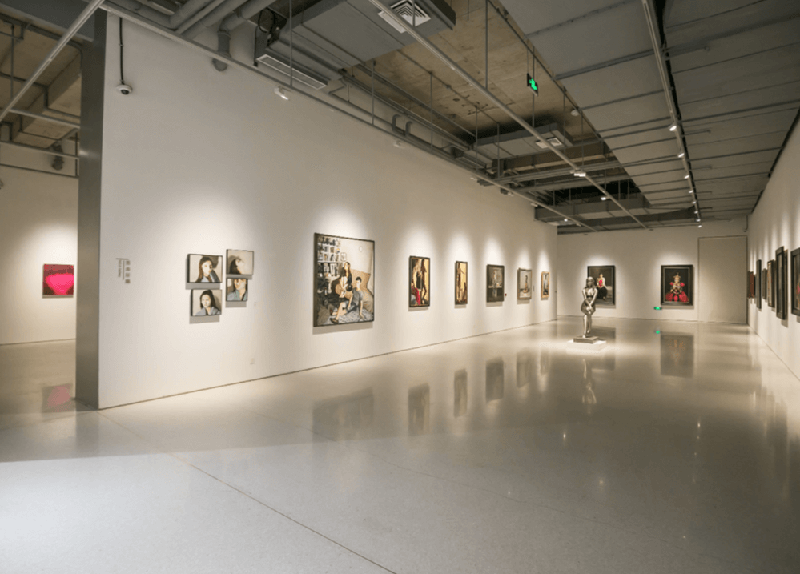
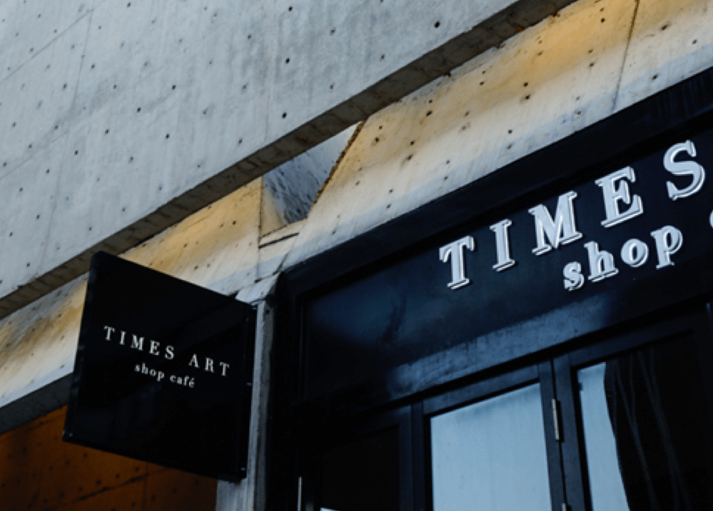
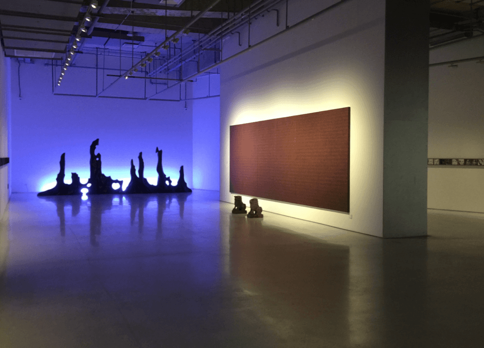

北京时代美术馆是由华熙集团全资创建的民营公益性美术馆，自2008年建馆以来，一直密切关注当代中国艺术的发展，努力以立足中国、以面向世界的开放态度和独到的艺术视野、独特的艺术发现、独立的艺术支持, 参与推动当代中国艺术的发展和实践。
北京时代美术馆下设当代馆和少年儿童美术馆，在未来的发展中，将通过广泛而有活力的展览与公共项目，连接国际文化与多元领域，以更加独到的视角和人文眼光，在文化艺术展览、国际交流、艺术教育、公共文化、公益资助、创意开发、媒体合作、专项艺术基金等多个方面，持续推动和支持人文艺术生态的发展，从而实现美术馆的社会责任。
北京时代美术馆新馆位于北京五棵松华熙Live商业区内，展馆建筑面积约6000平方米，约672米流动展线，展馆主体结构由多个不规则空间构成，既呈现出现代与未来的自由形态，又彰显了凝聚与开放的视觉张力和丰富的想象力。
展馆下设4个当代馆（1号馆、2号馆、3号馆、4号馆）以及1个少年儿童美术馆（5号馆），1个多功能厅、1个艺术概念店、5个艺术家驻馆工作室，以及专业化和国际化的硬件设施，包括恒温恒湿藏品库房、展厅专业照明设备、投影音响设备、安全监控系统等。简洁现代的空间结构，完善的功能配备，满足了各种高规格展览、以及各类讲座、论坛、放映和公关活动等不同形式的活动需求。